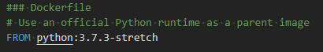
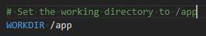
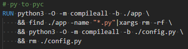
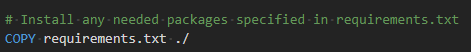
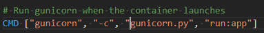
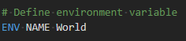
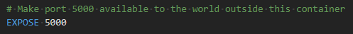

# Docker 學習筆記 (四) — 如何撰寫 Dockerfile
# Docker 的問世，翻轉了人們對用環境部署與開發的習慣，學會 Docker 絕對是一項不虧本的投資

上一篇 我們已經講述了 Docker 常用指令的使用方式。
本篇我們要來討論一下 Docker 創建 Image 的另一個方法： 使用 Dockerfile 。
Dockerfile 是一個以 YAML 語法格式撰寫的純文字檔案。
用以描述 Docker 產生鏡像檔所需要的內容、以及要做的事情。
Docker 預設會找尋目錄中的 “Dockerfile” 這個名字的檔案作為要產生 Image 的內容，因此不建議自行命名 (當然你要建立自己命名的 Dockerfile 也行，只是在 docker build 時就要指定它要讀哪個檔案)。
詳細的 Dockerfile 文件撰寫規範可以參考 Docker 官方的 Dockerfile Document 。
本篇將以一個範例作為 Dockerfile 的講解。
### Dockerfile | |
# Use an official Python runtime as a parent image | |
FROM python:3.7.3-stretch | |
# Set the working directory to /app | |
WORKDIR /app | |
# Install any needed packages specified in requirements.txt | |
COPY requirements.txt ./ | |
COPY gunicorn.py ./ | |
RUN pip install --trusted-host pypi.python.org -r requirements.txt \ | |
&& python3 -O -m compileall -b ./app \ | |
&& find ./app -name "*.py"|xargs rm -rf \ | |
&& python3 -O -m compileall -b ./config.py \ | |
&& rm ./config.py | |
# Make port 5000 available to the world outside this container | |
EXPOSE 5000 | |
# Define environment variable | |
ENV NAME World | |
# Run app.py when the container launches | |
CMD ["gunicorn", "-c", "gunicorn.py", "run:app"] |
以上的 Dockerfile 範例描述了我們在 Build Image 時要做哪些事情。
- 使用
python-3.7.3-stretch作為基底鏡像 設置檔案當前目錄為 app。- 將專案的 requirement.txt, gunicorn.py 複製到 docker 內。
- 執行 pip install
- 宣告開放 5000 PORT。
- 設置環境變數。
- 設定 Container 啟動時要執行的指令。
以下我們將逐行講解這些指令的詳細用法。
# #：使用 # 代表註解
文件可以使用 # 來進行註解。
# FROM
以哪個 Image 為基底進行改良 。
格式： FROM <image name> 或 FROM <image name>:<tag>

一般來說我們創建一個自己的 Image，都是希望 Docker 環境能夠直接執行專案。
我們不希望從架設環境開始創建 Docker Image，因此大多時候，我們會直接從 DockerHub 找尋已經架好環境的 Image 作為基底，創建自己的 Image。
From 關鍵字會先從本機的 Docker image 中找尋符合的 Image，若找不到則從 DockerHub 上下載。
以我們這邊的例子便是以 Python:3.7.3-stretch 作為基底 Image 來建置我們自己的 Image。
# WORKDIR
設定當前工作目錄。
格式： WORKDIR <path>

使用了 WORKDIR Docker 會將指定的目錄設定為當前的工作目錄。之後使用到的各項指令諸如：RUN、CMD、ENTRYPOINT、COPY… 等，都會以此目錄為主。
另外， 如果此目錄並不存在，WORKDIR 會自動幫你創立 。
# RUN
執行命令。
格式： RUN <command>

RUN 用來執行 Shell 指令，例如本文範例便是使用 RUN 調用 pip 安裝 python 的相關套件。
這邊有一點要值得注意的是， Dockerfile 中的每一個指令都是啟動一個 container 、執行命令、之後以 Commit 的方式提交修改，直到完成整個 Image。
很多剛接觸 Dockerfile 的使用者，會將 RUN 當成一般的 Shell 腳本撰寫，這樣的理解就有可能踩到以下這個例子的坑。
RUN cd /app
RUN echo "hello" > world.txt
這種寫法，在 build Dockerfile 時，會輸出「 找不到 /app/world.txt 」的錯誤或是 world.txt 的內容不是 hello ，其原因便是因為 兩條指令存在於不同的 container ，兩者互不影響。
# COPY
複製「來源文件 \ 目錄」到的 Image 中的「文件 \ 目錄」中。
格式： COPY [--chown=<user>:<group>] <source path>... <dist path>

dist path 可以是 Container 內的絕對路徑，也可以是相對於 WORKDIR 的相對路徑。與 WORKDIR 一樣，若是當下 Image 中沒有此目錄，則複製文件前 Docker 會自動建立缺少的目錄。
另外，使用 COPY 會保留來源數據的各種屬性，諸如： 讀寫權限 、 執行權限 、 文件變更時間 … 等等。若希望更改文件的所屬 user 或是 group，可以在 COPY 時加入 --chown=<user>:<group> 來自訂。
補充：
與此指令相仿的還有 ADD ， ADD 可以當作是 COPY 的強化版。
格式： ADD [--chown=<user>:<group>] <source path>... <dist path>
ADD 允許我們的 source path 是一個 URL。
此時， Docker 將會自動去網路上下載這個 URL 的文件到 dist path 中，並且文件權限自動設置為 600 。
另外，如果下載的是一個壓縮檔， ADD 會自動將其 解壓縮 。
儘管 ADD 是如此方便，但也因為其過多的預設功能使其在 Docker 的官方文檔中推薦盡可能使用 COPY 而非 ADD 。除非在需要自動解壓縮檔案的場合才使用。
# CMD
CMD 指令與 RUN 相似，用於指定 Container 的啟動時首要執行的命令。
格式： CMD <command> 或 CMD [“command name”, argv1, argv2, …]

以我們的範例來說，便是當 Container 啟動時，便會先行執行 gunicorn -c gunicorn.py run:app 這行 shell script。
值得一提的是，CMD 可以在 RUN 一個 Container 時，以 -it <其他指令> 來取代掉。
例如：若我們今天以 docker run -it test_container bash 啟動 Container 的話，我們將會直接進入到 bash 而非執行 gunicorn 。
# ENV
設置環境變數
格式： ENV <key> <value> 或是 ENV <key1>=<value1> <key2>=<value2> ...

若專案中有需要使用到環境變數，則可以使用此指令設置環境變數。
# EXPOSE
開放 PORT。
格式： Expose <PORT1> <PORT2> …

EXPOSE 指令是宣告 Container 運行時對外可以使用哪些 PORT。
這只是一個宣告，在運行時並不會因為這個宣告就讓專案開啟這些 PORT 的服務，一切還是以專案怎麼撰寫為主。
要搞清楚的是，在運行 Container 時，所使用的 -p <host port>:<container port> 是映射 host 的 port 與 container 的 port，而 EXPOSE 僅是宣告 Container 打算使用什麼 PORT 。並不會自動映射到 host 的 port。
# 結語
本節中，我們以一個範例講述的 Dockerfile 如何撰寫。
並且講述了每個指令的意義與使用方法。
若是需要更加深入的撰寫教學，可以查看官網、或是此文隨附的參考目錄。
應該可以對於 Dockerfile 有更深入的理解。
下一篇我們將 以一個小範例作為 Docker 操作的實戰講解 。
# 參考條目
- Docker — 从入门到实践
- Docker 教程
- Dockerfile reference